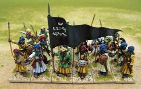

Le phénomène des soldats-esclaves dans l'Occident Islamique, nous allons l'étudier dans plusieurs espaces géographiques :
mais aussi, dans plusieurs moments de l'histoire, pendant plusieurs dynasties :
C'est une institution ancienne et unique au monde islamique. Les représentants les plus connus sont les mamelouks d'Egypte et les jannissaires Ottomans.
Mamelouk, WikipédiaJ'ai choisi ce sujet pour son interêt sur les sujets de l'histoire militaire, politique, mais aussi pour le côté anthropoloqique qu'amène le sujet.
